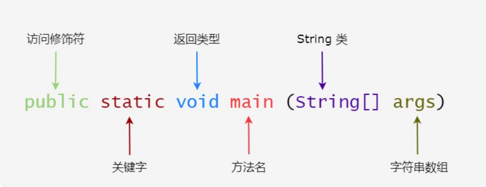

2 Java基础语法太简单了¶

Java虽然学习门槛有点高，但是如果熟悉Python以后，再看Java基础语法，其实是非常简单的。本文是开篇，将参考菜鸟教程，展开对Java入门知识的学习。
4个概念¶
对象：Java是纯面向对象编程语言，对象的概念有点抽象，具体来说可以是一条狗，也可以是某个人。
类：类是对象的模板，有点像克隆的母体。
属性：属性就是状态，相当于变量。
方法：方法就是行为，跟函数类似，完成某个特定功能。
Hello World¶
Java的Hello World经常拿来和其他语言比较，嫌它啰嗦，然而啰嗦的背后是严谨：
public class HelloWorld {
public static void main(String[] args) {
System.out.println("Hello World");
}
}

Java把每个语法都显式的表达了出来，阅读代码就能知道是什么意思，不会产生额外的意想不到的结果。
基本语法¶
public static void main(String[] args)，是所有Java程序的执行入口。源文件后缀是
.java，源文件名称必须和类名一致。源文件编译后的文件后缀是
.class。Java是大小写敏感的，类名首字母应该大写，方法名首字母小写，也就是驼峰命名法。
标识符¶
类名、属性名和方法名都被称为标识符，Java标识符规则如下：
标识符是大小写敏感的
所有的标识符都应该以字母（
A-Z或者a-z）、美元符（$）、或者下划线（_）开始首字符之后可以是字母（
A-Z或者a-z）,美元符（$）、下划线（_）或数字的任何字符组合关键字不能用作标识符
比如合法的标识符：
age、$salary、_value、__1_value
非法的标识符：
123abc、-salary
修饰符¶
访问控制修饰符 : default, public, protected, private
非访问控制修饰符 : final, abstract, static, synchronized
Java的修饰符极大的提高了代码可阅读性。
注释¶
public class HelloWorld {
/* 这是第一个Java程序
* 它将输出 Hello World
* 这是一个多行注释的示例
*/
public static void main(String[] args){
// 这是单行注释的示例
/* 这个也是单行注释的示例 */
System.out.println("Hello World");
}
}
八种基本类型¶
boolean 布尔型 1个字节 8bit（8位）
byte 字节类型 1个字节
char 字符类型 2个字节
short 短整型 2个字节
int 整型 4个字节
long 长整型 8个字节
double 双精度类型 8个字节
float 浮点型（单精度）4个字节
默认的整数类型是int，如果要定义为long
，则要在数值后加上L或者l。
默认的浮点型是double，如果要定义float，则要在数值后面加上F或者f。